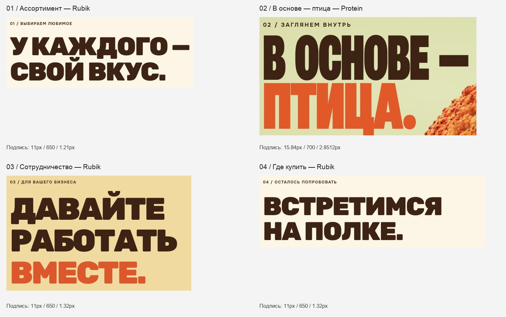
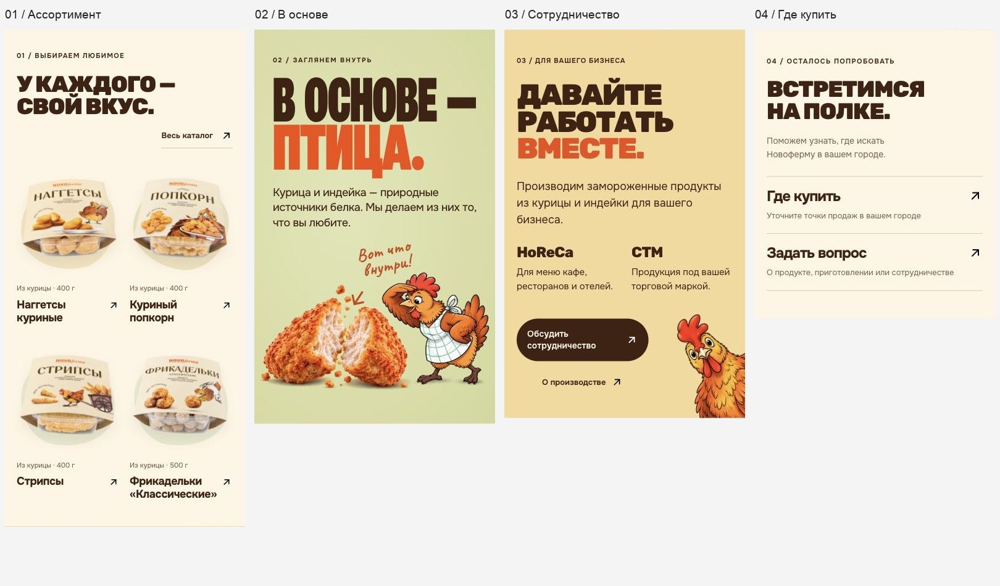

16 октября 2026 · аудит без правок
Главная Новофермы:
что мешает цельности
Визуальная согласованность главной Новофермы. 4 слайда первого экрана, этажи 01–04, подвал; 1440×1000, 1920×1080, 390×844.
Сильные композиции уже есть. Главная воспринимается как две типографические системы: узкая высокая плакатная в «В основе — птица» и широкая округлая в соседних этажах. Нужна общая система заголовков, надзаголовков, текстовых полей и акцентов.
Код, стили, графика и сборка сайта не изменялись.
Заголовки рядом
Фрагменты текущего экрана 1440 px, в одном масштабе. Разные размеры допустимы; разный характер букв сейчас разделяет этажи.

Мобильные этажи

Порядок исправлений
Две системы заголовков
Взять высокий плотный характер «В основе — птица» за основу заголовков 01/03/04. Сохранить разные размеры и переносы по роли, но согласовать пропорции, плотность и межстрочный ритм. Названия продуктов — намеренное исключение.
Номера и подписи этажей
Один компонент: общий шрифт, вес, размер, межбуквенный интервал, формат «01 / …» и отступ до заголовка. Не масштабировать служебный номер пропорционально всему постеру.
Текстовая сетка
Общий левый край и ограничение ширины для текста информационных этажей, включая 02. Еду и курочку можно оставить навылет. При переносе текста 02 нужно заново проверить композицию, а не просто добавить отступ.
Оранжевые акценты и контраст
Зафиксировать яркий фирменный акцент и более тёмную текстовую/интерфейсную роль для цветных фонов. Коричневый #402111 уже согласован. Яркий пол и тёмная CTA не обязаны иметь одинаковый цвет.
Мобильная плотность
После общей типографики перепроверить отступы заголовок → ссылка → карточки в 01 и размеры действий в 03. Сетка по два продукта уже работает.
Проверка по порядку экранов
1. Первый экран / четыре продукта
Визуально согласован
Положение, размеры и оформление CTA совпадают во всех четырёх слайдах. Оранжевый пол и бумажный фон — общие загруженные слои. Названия продуктов поддерживают исходные постеры.
Выразительные названия продуктов можно сохранить как отдельную роль; не стоит переносить их разное начертание на информационные этажи.
2. 01 / Ассортимент
Композиция рабочая, типографика требует согласования
Четыре продукта выстроены в общий ряд; на телефоне сохраняются две карточки в строке. Наложений в проверенных состояниях не обнаружено.
Широкий Rubik отличается по характеру от узкого плакатного шрифта 02. Надзаголовок — 11 px, вес 650, трекинг 1.21 px; у соседних 03/04 трекинг 1.32 px. На телефоне вторичная ссылка «Весь каталог» отделена от заголовка вправо; при будущей правке стоит теснее связать их и убрать часть пустоты над упаковками.
3. 02 / В основе — птица
Сильнейшая плакатная композиция, есть расхождения с системой
Иерархия, плотный заголовок и связь текста с едой и персонажем читаются уверенно. Текст остаётся HTML, иллюстрации отдельными слоями.
Надзаголовок крупнее и разреженнее: 15.84 px / 700 / 2.85 px на 1440 px и 21 px / 700 / 3.78 px на 1920 px. Левый край текста — 59 px вместо 72 px при 1440; 79 вместо 312 px при 1920; 30 вместо 20 px при 390. Оранжевое слово на зелёном имеет слабый контраст.
4. 03 / Сотрудничество
Содержание читается, оформление требует согласования
Два бизнес-направления и CTA хорошо различаются. Жёлтый фон и выглядывающая курочка выглядят намеренно и могут оставаться отличительными.
Широкий Rubik дополнительно отличается от 01/04 размером, межстрочным интервалом и плотностью. При этом один размер для всех заголовков не нужен: важнее общие пропорции букв и предсказуемая шкала. Оранжевое «вместе.» недостаточно контрастно на жёлтом. На телефоне трекинг надзаголовка .08em, у 04 — .12em.
5. 04 / Где купить и подвал
Читаемо, нужна типографическая доводка
Следующие действия понятны; ссылки отделены и занимают заметные области. Видимых перекрытий с подвалом нет.
Заголовок повторяет широкий стиль 01 и продолжает разрыв с 02. У надзаголовков различается расстояние до заголовка: 20 px у 01, 15.84 у 02, 28 у 03, 24 у 04 на 1440 px. В подвале рукописная фраза и информационные ссылки выполняют отдельные роли; их не нужно делать плакатными.
Точные замеры
| Этаж | Заголовок, 1440 / 390 | Подпись на 1440 | Левый край, 1440 / 1920 / 390 |
|---|
| 01 | Rubik 900 · 72 / 36.7 px | 11 px ·650 ·1.21 px | 72 / 312 / 20 px |
| 02 | Protein 850 ·174.2 / 99.5 px | 15.84 px ·700 ·2.85 px | 59 / 79 / 30 px |
| 03 | Rubik 900 ·87.8 / 47.6 px | 11 px ·650 ·1.32 px | 72 / 312 / 20 px |
| 04 | Rubik 900 ·72 / 36.7 px | 11 px ·650 ·1.32 px | 72 / 312 / 20 px |
Оранжевые акценты: hero-accent #fa4b06, protein-title #f34b08, cooperation-title #ee4b12, protein-caption #cc430d, hero-cta #c94310, brown #402111.
Оранжевый заголовок на зелёном: 2.41–2.76:1; на жёлтом: 2.69:1. Расчёт по текущим CSS RGB. У градиента приведён диапазон крайних цветов, без учёта сглаживания букв. Это вспомогательная проверка читаемости, а не полная проверка доступности.
Полные снимки и ограничения
Аудит касается визуальной согласованности главной в зафиксированных состояниях. Внутренние страницы, отправка форм, полный проход клавиатурой и скринридером не проверялись. Отсутствие наложений относится к трём указанным ширинам, не ко всем возможным устройствам.